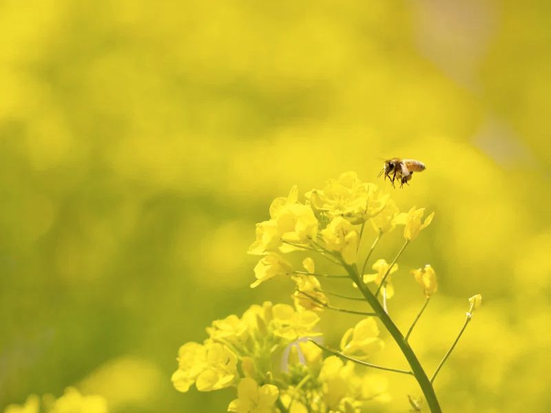

Коли тепліє, бджоли роблять перші облети й починають носити пилок і нектар. Для пасічника це початок нового року.
Узимку бджоли майже не виходять із вулика. Коли в безвітряний сонячний день повітря прогрівається приблизно до +10 °C, вони вилітають на очисний облет: за зиму в кишечнику накопичується багато відходів, а в клубку та в мороз бджоли цього не роблять. Дата щороку різна, і за нею видно, чи сім’я пережила зиму.
Спершу цвітуть ліщина, верба, кульбаба й плодові дерева. Для бджіл це перший пилок: саме з нього вони беруть білок, щоб вигодовувати личинок. Тому рання весна — час, коли сім’я набирає силу, а не збирає мед. Що й коли цвіте, дивіться в календарі «Медоноси», а що таке квітковий пилок, є на окремій сторінці.
Матка відкладає дедалі більше яєць, і чисельність сім’ї зростає від кількох тисяч узимку до кількох десятків тисяч улітку. Увесь цей ріст потребує корму й тепла, тому холодна затяжна весна для бджіл небезпечна. Про це ж розповідає стаття «Що загрожує бджолам».
Якщо поруч посіяно ріпак, жовті поля дають перший мед сезону. Його ми відкачуємо наприкінці травня або на початку червня. Він білий, кремовий і швидко густішає. Докладніше на сторінці «Ріпаковий мед». Якщо ріпаку поруч немає, першим буде акацієвий мед на початку літа.
Оглядає бджолині сім’ї, перевіряє запаси меду й матку, дивиться, чи є свіжі яйця й чи вистачає бджолам місця. Готує вулики до сезону: чистить, міняє старі рамки, додає нові. Відкривати вулик намагаюся лише в теплу погоду, щоб не вихолодити розплід.
Наприкінці весни й на початку літа сильні сім’ї можуть захотіти розділитися: стара матка вилітає з частиною бджіл і шукає нове місце. Це називають роїнням. Пасічник стежить за цим і намагається не втратити рій. Якщо ви побачили рій на дереві, не лякайтесь, а прочитайте поради в статті «Як допомогти бджолам».
Пасічник дивиться, чи є в гнізді свіжі яйця, чи рівний розплід і чи вистачає корму. Свіжі яйця означають, що матка жива й працює. Якщо яєць немає, потрібно діяти швидко. Також оглядають стільники: чи немає цвілі, чи чисті рамки й чи достатньо вільного місця для росту сім’ї.
Бджоли вилітають лише тоді, коли тепліше приблизно за +10 °C, а в дощ і холод сидять у вулику й витрачають запаси. Якщо така погода триває тижнями, сім’я слабшає. Тому в холодні роки пасічник особливо уважний до запасів корму.
Навесні бджоли особливо активно носять воду: вона потрібна, щоб розводити корм для личинок. Тому поруч із вуликом важлива чиста мілка вода, про що розповідає стаття «Природа навколо пасіки».
Коли бджоли роблять перший облет?
Коли в безвітряний сонячний день тепліє приблизно до +10 °C. Дата щороку різна.
Навіщо бджолам навесні пилок?
З нього бджоли беруть білок для вигодовування личинок. Тому перші квітучі рослини дуже важливі для сім’ї.
Чи є навесні мед?
Лише ріпаковий, і лише в тому випадку, коли ріпак посіяно поруч. Ранньою весною бджоли мед не збирають, а нарощують силу.